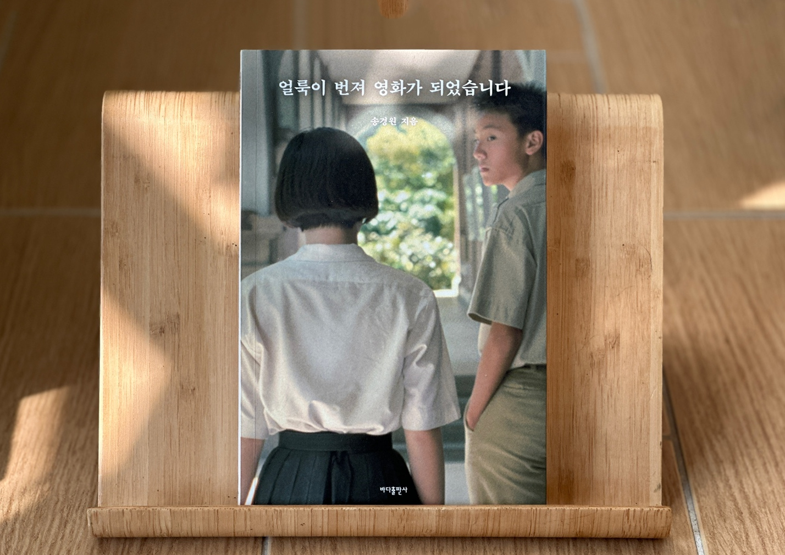

안녕하세요 라보엠입니다.
책 얼룩이 번져 영화가 되었습니다는 영화평론가이자 씨네21 편집장 송경원의 첫 평론집입니다. 이 책은 영화를 해설하거나 분석하는 데 그치지 않고, 영화가 우리 삶에 남기는 궤적과 기억, 그리고 영화를 사랑하는 한 사람의 진솔한 고백을 담고 있습니다. 28편의 영화와 만화, 게임, 애니메이션에 대한 글을 통해, 저자는 영화가 단순한 오락이 아니라 우리 삶의 일부임을, 또 영화를 ‘쓴다’는 것이 어떤 의미인지를 깊이 있게 이야기하고 있습니다.

영화에 대한 고백, 그리고 글쓰기의 의미
책의 서문에서 저자는 “영화 글쓰기는 자신이 본 영화를 닮고 싶어 한다”고 말합니다. 영화와 하나가 될 수 없는 영화 글쓰기는 신기루를 쫓는 것과 같지만, 계속 써 내려가며 자기 마음속 얼룩을 확인해야 한다고 고백합니다. 이 얼룩이 번져 영화가 된다는 저자의 말은, 영화가 우리 삶에 남기는 흔적, 감동, 그리고 글쓰기의 실패와 좌절, 그럼에도 불구하고 계속되는 사랑을 상징합니다.
영화, 그리고 우리 삶의 궤적
이 책은 15년간 영화와 대화를 나눈 저자의 고백의 궤적을 엮은 것입니다. 영화가 우리 삶에 남기는 궤적을 통해 기억을 조명함으로써, 영화의 한 장면이 된 우리의 삶을 꾹꾹 눌러썼다는 평이 있습니다. 엔딩 크레디트가 올라가면 영화는 끝이 나지만, 영화와의 대화는 비로소 시작된다는 저자의 시선은, 영화가 끝난 후에도 우리 마음에 남는 감정과 생각을 일깨워줍니다.
책에는 《프렌치 디스패치》, 《보이후드》, 《고령가 소년 살인사건》, 《우연과 상상》, 《헤어질 결심》, 《탑건: 매버릭》, 《아이리시맨》, 《1917》, 《시카리오: 암살자의 도시》 등 다양한 작품이 등장합니다. 각 영화에 대한 저자의 시선은 평론을 넘어, 영화가 우리 삶에 남기는 의미와 감정, 그리고 시대적 맥락을 함께 조명합니다.
영화 글쓰기의 해법, 그리고 시네필의 고민
이 책은 는 기자와 평론가 사이에서 저자가 찾아낸 영화 글쓰기의 해법을 보여주는 책이기도 합니다. 글쓰기는 쓰고자 한 글과 쓴 글을 가능한 한 닮게 만들려는 노동이지만, 머릿속의 이상과 눈앞의 현실 사이에는 필연적인 틈새가 생깁니다. 저자는 이런 틈새를 인정하며, 그럼에도 불구하고 영화에 더 가까워지고 싶은 마음으로 글을 써왔습니다.
코로나19 팬데믹과 함께 시네마라는 단어가 조롱 반 진정성 반의 상징적 단어가 되었고, 영화 관람이라는 행위가 극장의 대형 스크린이 아니라 손바닥에 놓인 스마트폰의 화면으로 축소된 듯 보일 때도 있습니다. 이런 시대에 영화를 보고 글을 쓴다는 것이 어떤 의미인지, 저자는 반복해 질문하고 답합니다.
직접 읽어본 소감
이 책을 읽으며 가장 인상 깊었던 점은, 저자의 진솔함과 따뜻함입니다. 영화를 사랑하는 마음, 영화에 대해 글을 쓰는 일의 어려움과 즐거움, 그리고 영화가 우리 삶에 남기는 흔적을 고백하는 저자의 태도는 독자에게 깊은 울림을 줍니다. 저자는 평론이란 잣대로 노력해 만든 어느 작품에 누가 되거나 해를 끼치진 않을까 고민하고 염려하는 자세를 보여주며, 그 ‘착함’이 책 곳곳에 배어 있습니다.
책을 읽다 보면, 영화를 보며 느꼈던 감정과 생각, 그리고 그 영화가 내 삶에 남긴 흔적이 떠오릅니다. 저자의 해석과 내 기억이 교차하며, 영화를 다시 보고 싶고, 누군가와 이야기 나누고 싶은 마음이 절로 듭니다.
개인적으로는 현재 쿠플에서 매주 공개되고 있는 HBO시리즈 라스트 오브 어스 파트2(이하 라오어2)를 다룬 내용이 좋았습니다. 책이 출간되었을 때는 라오어2의 드라마가 나오기 전이지만, 드라마와 게임의 스토리와 거의 동일하기 때문에 동일한 관점에서, 유저들이 왜 분노했는지, 그리고 비슷한 사례로 한국 좀비영화로 성공한 부산행과 그의 속편 반도가 왜 비판을 받았는지에 대해 풀어나가는 이야기가 흥미로웠습니다.
맺음말
책 얼룩이 번져 영화가 되었습니다는 영화를 사랑하는 이들에게, 그리고 영화에 대해 글을 쓰는 이들에게 큰 위로와 영감을 주는 책입니다. 영화가 우리 삶에 남기는 궤적, 영화와의 대화, 글쓰기의 의미를 진솔하게 고백하는 이 책은, 영화를 사랑하는 모든 이들에게 추천하고 싶은 평론집입니다.
책을 덮고 나면, 영화가 내 삶에 남긴 얼룩이 떠오르고, 그 얼룩이 내 마음에 번져 오는 경험을 하게 됩니다. 영화를 사랑하는 마음, 그리고 영화와의 대화가 계속되길 바라는 모든 이에게 이 책을 권합니다.